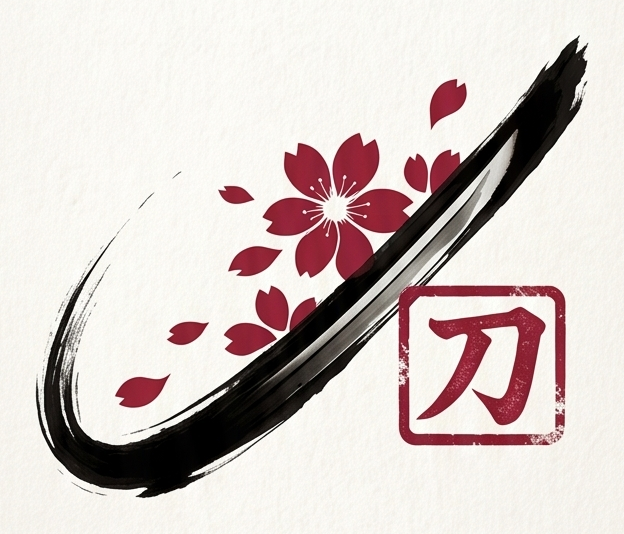

Katana Studios
Katana Studios / Work Book
100%
Turn the page · Drag the magnifying glass
Katana Studios
Culture-led. Youthful and modern with a vintage edge, rooted in its identity. Stories that cut through the noise — made to hit, crafted to stay. Films, ads and commercials, social media, and production, gathered in one work book.
Work Index / Four Disciplines
Katana Studios · Films · Ads / Commercials · Social Media · Production